Sobre mí
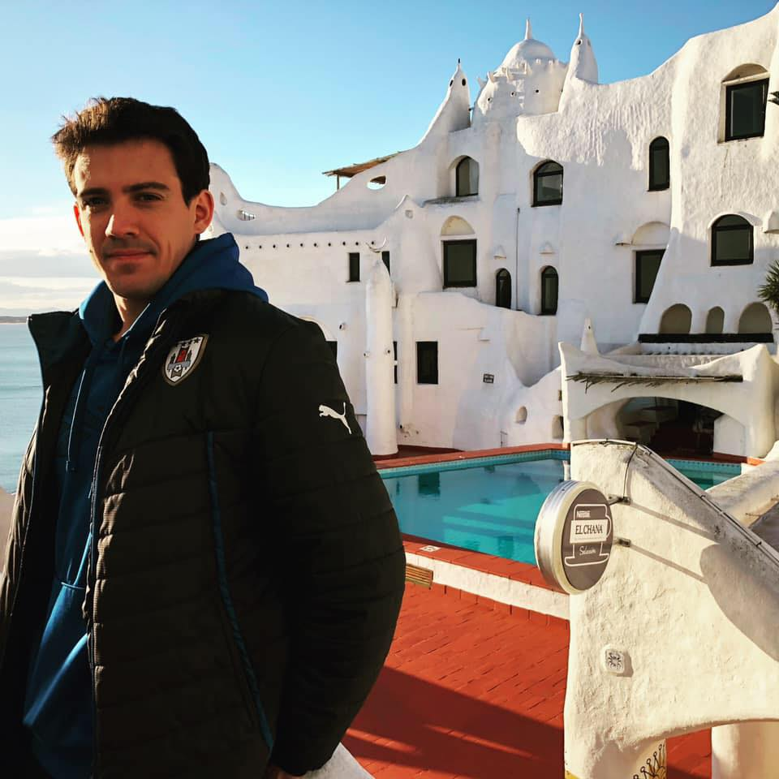Línea de Tiempo
Hola! Mi nombre es Josué Valverde Bello. Nací en Montevideo, Uruguay en 1989. Provengo de una familia algo nomade, ya que mi abuelo paterno es Uruguayo, mi abuela ecuatorina y padres y resto de la familia materna son todos Chilenos. Es por esta razón que he vivido en muchos paises comenzando por Uruguay, Ecuador y Chile donde realice la mayor parte de mi infancia y estudios.

Durante mi infancia destacare participacion activa dentro de los deprotes a nivel competitivo como: Voleyball, Tenis de Mesa, Atletismo y músical tanto en coros, conjuntos y orquestas. Esta ultima pese a tener estudios básicos de piano fue en flauta tenor y caja (guitarra autodidacta).
Realice mis estudios básicos y secundarion en Los Ángeles, Chile donde posteriormente me traslade a Concepci+on y Temuco a realizar la Carrera de Kinsiología en la Universidad Mayor.
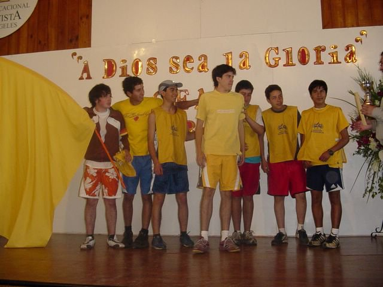 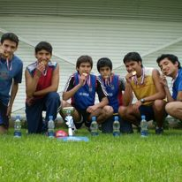Cuando termine la secundaria tuve planes de estudiar medicina en Argentina por lo que prepare la prueba de ingreso pero no me presente porque no estaba seguro que estudiar. Por lo que entre a estudiar Kinesiología en la universidad de LA, donde al gustarme al año siguien me traslade de sede a Concepcion donde iria mi herman al año siguiente pero como quedo en Temuco termine cambiandome de univ
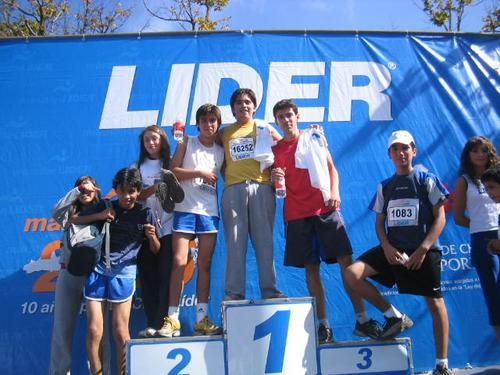Con padre médico desde niño acompañabamos en operativos medicos sociales donde ayudabamos con otros profesionales a comunidades necesitadas de forma gratuita durante un fin de semana. En la univeridad hicimos algunos como estudiantes de año avanzado dando charlas educativas. En el tiempo libre durante la universidad hacia deportes y bailaba tango. Cosa que empece en la universida y segui haciendolo parte de un estudio que se presento como tango terapia en adultos mayores y pacientes con Parkinson.
Al terminar la universidad volvimos a Los Angeles con mi hermana, ambos estudiamos, terminamos y graduamos el mismo día pero en universidades distinas. En Los Ángeles trabaje part time en la clinica Adventista como pueden ver en mi CV. Pero al pasar de un año buscando trabajo en todo Chile y con conocimiento de la dificil situacion para mi carrera en cuanto a poco trabajo y muchos profesionales. Pedian 2 años de experiencia y muchos cursos y magister para muchos de estos puesto. Por lo que decidi ir a Uruguay.
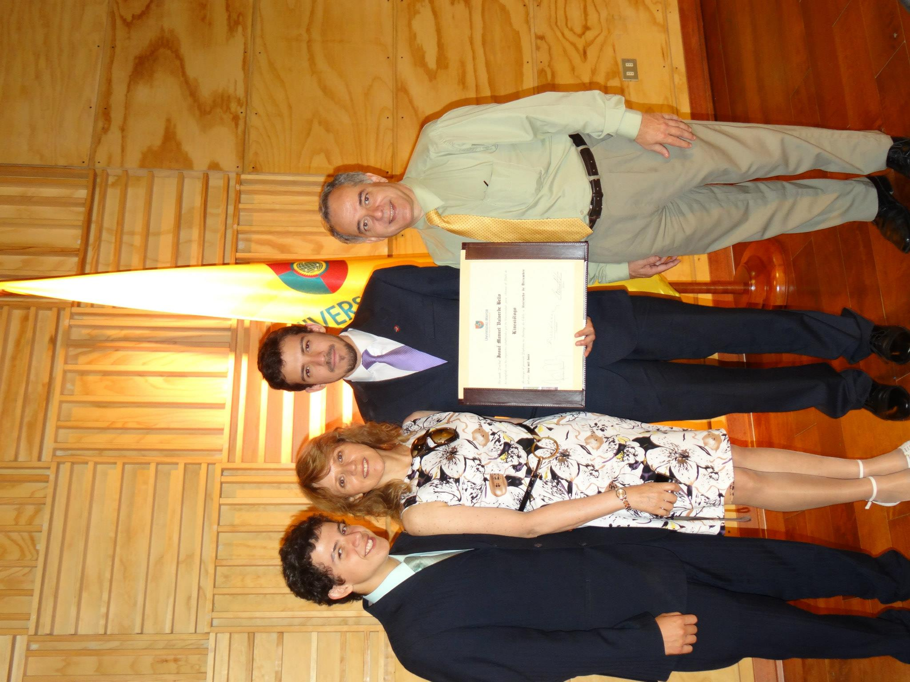En Uruguay hice pequeñas cosas mientras revalidaba mi titulo por lo que mientras salia este tramite tambien trabaje en USA ayudando en la construccion y al volver y dejar CV me llamaron de todos lados porque hay menos universidades y profesionales a diferencia y con mucho trabajo. Llegue a tener 3 trabajos y hacia guardias de domingo a viernes 12 horas.
Durante el invierno hice varios años plan invierno ya que el internado en Chile lo hice en sala IRA, lugar donde se atienden de forma ambulatoria niños con problemas respiratodios y el hospital Pereira Rossell que es pediatrico contrata durante el invierno con un sistema mas parecido al Chile a diferencia de todo Uruguay con trabajo activo y dinamico no limitado como otros lugares que trabaje. Hacia pediatria de mañana y adultos de tarde. En la Médica Uruguaya cubri todas las areas de complejidad antes de ser titular en policlinica, como por ejemplo: ICI que es sector de Cirugía Cardiaca, cuidados intensivos adultos y pediatricos, piso general y policlinicas perisfericas.
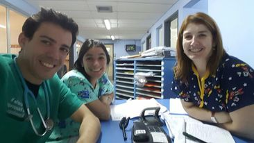Trabajando como Fisioterapeuta en cuidados intermedios VNI Pediatria
Dentro de mi tiempo libre que era poco igual iba a un club hacer voleyball, box, jiu jitsu, natacion y gym cuando no estaba bailando Tango. Trabaje tanto que el año que tuve que hacer la declaracion de impuesto tuve que pagar mucho por lo que me quede solo con un trabajo y aproveche de hacer medicina y SODRE (Escuela nacional de danza, division tango). Ambas cosas las deje ya que no me gusto el funcionamiento en general y falta de compromiso. Me di cuenta que por mi cuenta podia aprender y bailar mas y empece a viajar a Europa y lugares con tango durante mis vaciones.
Mi primer viaje hice un tur desde Roma a Londres y me di cuenta que tambien no convenia, por mi cuenta aprovechaba mas el tiempo y era mas barato. Conoci un argentino con quien iria a Rusia al año siguiente a ver el mundia y siempre conocer gente mientras bailaba tango y aprendia idiomas.
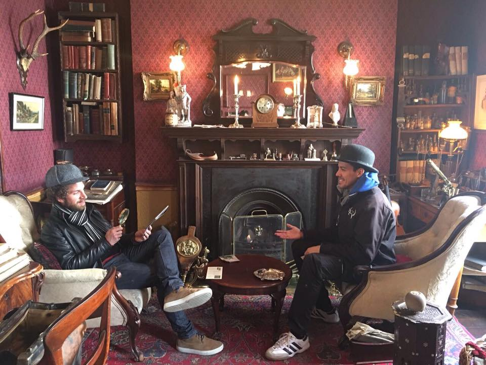A difencia de Europa occidental que es mas caro y menos amigable la gente al ser nacionalista y preferir hablar sus idiomas que el ingles, me gusto mas Europa del este, la gente se interesaba mucho por los latinos y habia mas gente joven bailando Tango, tuve varias novias que me ayudaron y motivaron aprender idiomas. De rusia volvi con una con la que baile en el mundial de tango y teatro, y por la cual me fui un tiempo despues a Rusia, estudie en la Universidad ruso pero el idioma, la falta de trabajo me hicieron dejar y trasladarme a otros paises.
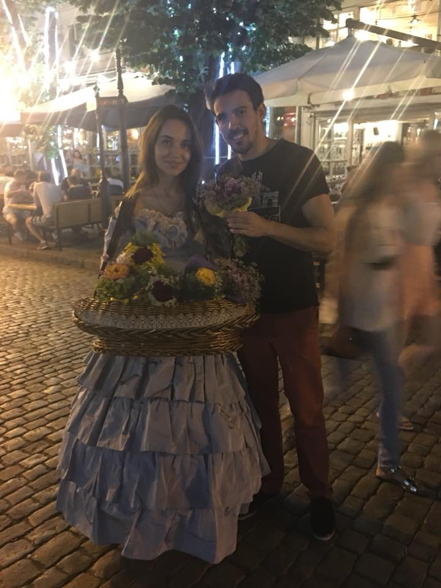Estuve entre Polonia y Ukrania un tiempo buscando trabajo y ganas de quedarme por la gente en el tango. Como no consegui pese que muchos hablan ingles y algunos español. Encontre una visa que se podia postular desde fuera, quizas la unica que se puede aplicar fuera del país de residencia en Alemania. Mi idea era trabajar y voler al Este pero la pandemia y despues la guerra me lo impidio.
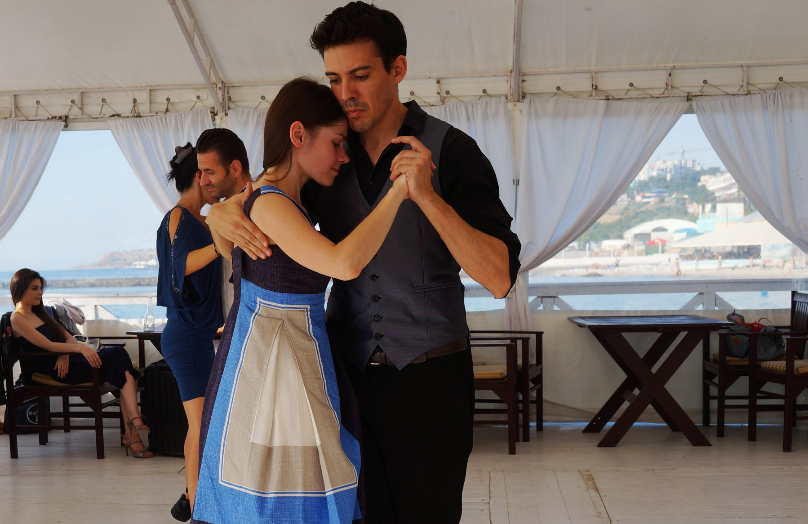En alemania estuve primero en Mannheim, donde una familia de conocidos donde hice los primeros tramites para poder trabajar y usar la visa, hice pasantias en consultas de Fisioterapeutas, Neurologia y como ayudante de enfermeria domiciliaria y casi al final de mi estadia en hogar de anciano.
Las ciudades pequeñas son mas dependientes del idiomas, hay menos gente que habla ingles y dificil conseguir trabajo por lo que me traslade a Berlin que tambien tiene mas Tango y trabaje como Freelancer en empresa de limpieza, tango particular y todo lo que pudiera hacer. Me costo encontrar trabajo por no trabajar los sabados y muchos lugares tanto como para alquilar preferian mujeres, por lo que es un poco mas cara la vida y dificil principalmente por el alquiler. Cuando empezo a llegar la pandemia intente irme del pais antes de quedarme sin trabajo pero quede atrapado y volvi finalmente a Mannheim donde recien comence a estudiar aleman y hacer trabajitos de todo tipo.
Cuando finalmente pude volver fue a Chile, donde pude trabajar en Urgencia con Paciente COVID. Antes de dejar Chile habia intentado de especializarme en urgencia, ventilacion mecanica y area de paciente critico pero es el area mas dificil de conseguir trabajo. La pandemia tuvo falta de profesionales por lo que pude aplicar y refozar mis conocimientos en esta area y ayudar a muchas personas. Todo cambio con la vacuna, donde mas de la mitad nos quedamos sin trabajo. Intente buscar trabajo pero volvi a intentar a fuera
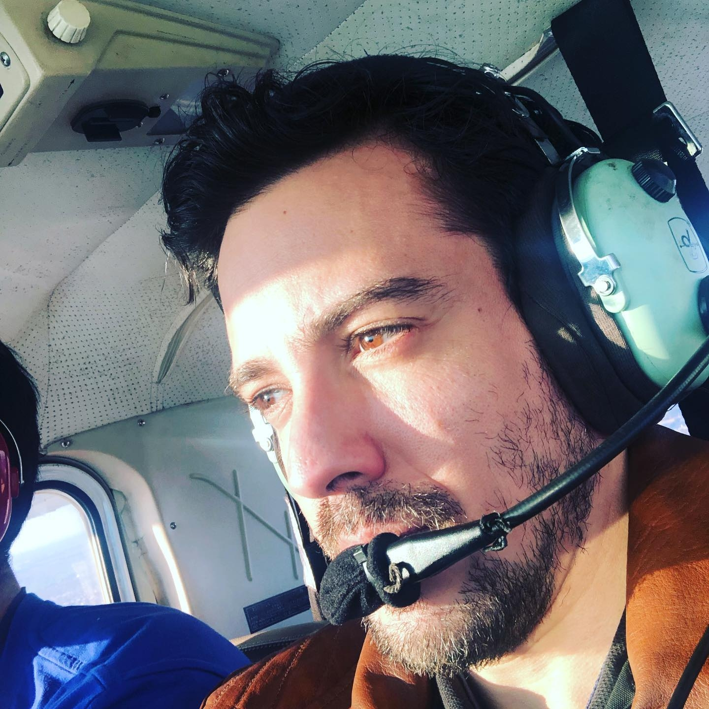Una vez de vuelta en Uruguay donde tenia que realizar un tramite de papeles, consegui trabajo y me quede un año pero con menos trabajo que la primera vez. Por lo que estuve un año trabajando en 3 lugares y bailando en el timpo libre pero la vida es muy cara en comparacion a otros paises, pero ademas de disfrutar mis amistades pude cumplir el sueño de volar alrederor de montevideo, cosa que siempre habia querido pero cuando averigue para tomar clases habian caido 2 avionetas. Mi abuela estuvo mal de salud y 2 murieron en años anteriores por lo que un viaje pendiente que tenia a Ecuador y cancelado varias veces por Covid pude realizarlo finalmente.
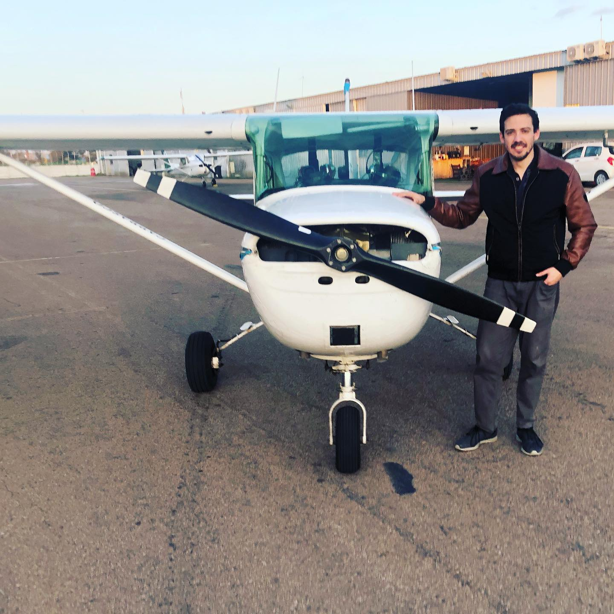En Ecuador la situacion esta muy mal en cuanto a inseguiridad, pero tengo familia, lugar y buena comida por lo que ayude a mi familia en general con fisioterapia y evolucionaron bien. Inicie el tramite de revalida pero sin intenciones de proyectarme ya que la primera semana me secuestraron y la situacion general no es muy alentadora. Comence curso de Programacion en Python, idioma y otras cosas que comence aprender durante la pandemia en Alemania, trabaje en lugares de IT muy prometedores por lo que decidi cambiar o complementar mis concocimiento con desarrollo web.
Mientras realizo mi Bootscamp estoy aprendiendo cosas complementarias que me permiten realizar programas relacionadas la salud y mi web que me permitiran buscar trabajo idealmente remoto.
Continuara....